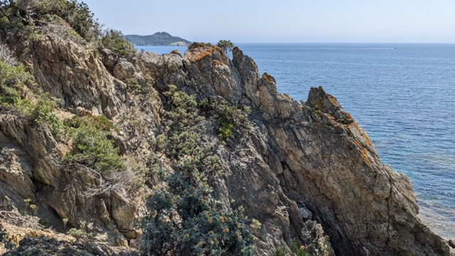
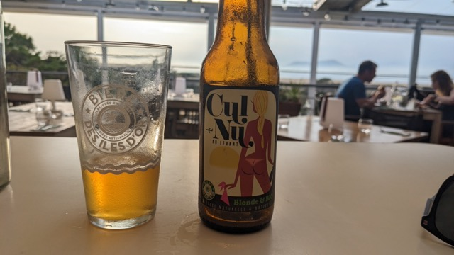
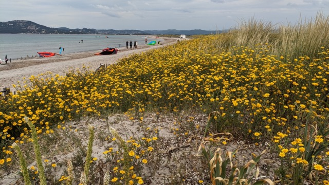
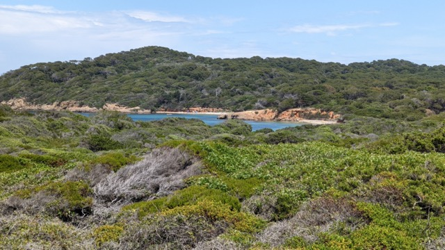
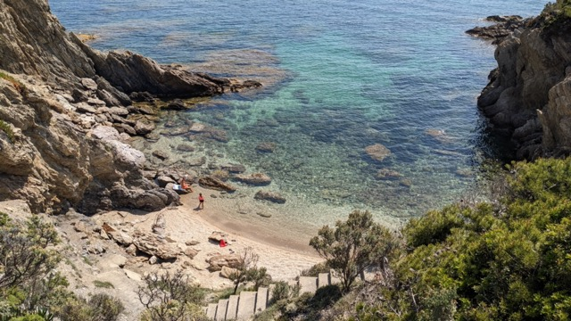

Penisula of Giens near Hyères - Excellent watersport destination in France
The peninsula of Giens (French Presqu'île de Giens) with the village of Giens is situated on the western end of the French Riviera between Toulon and Saint-Tropez, opposite the town of Hyères. It is linked to the mainland by two tomboli. Giens is part of the town of Hyères.
Giens is home to one of France's most popular windsurfing and kitesurfing areas. Flamingos live in the lagoon between the two estuaries, a former saltworks. The underwater world of Giens has gained a certain fame among divers, as well as many local fish species, there are also some wrecks.
From Giens you can reach the island of Porquerolles in the Îles d'Hyères by boat.
 Beach on the island of Porquerolles
Beach on the island of Porquerolles

The south of Giens has a rocky cliff

Local beer with funny names

Watersport beach between Hyéres and Giens

Island of Porquerolles

Hidden beach in the south of Giens